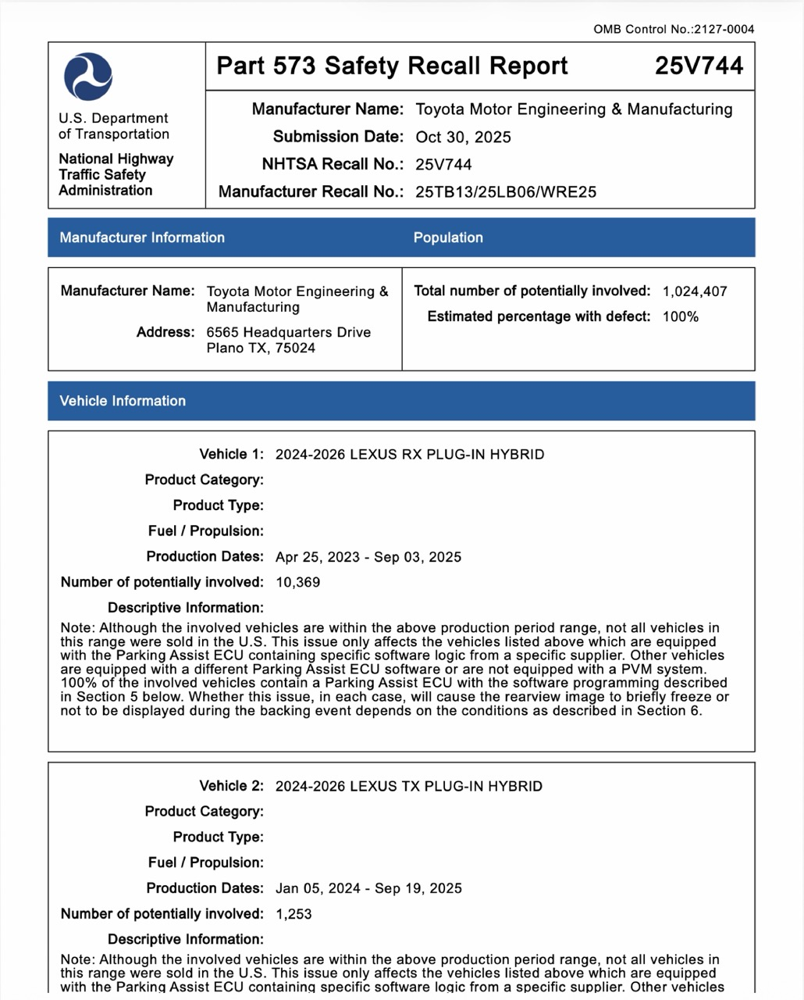

2025
NHTSA publishes data that include information such as the main cause of each recall and the components that need to be repaired or replaced. We classified the recalls into six categories: “software,” “safety equipment,” “powertrain,” “chassis,” “electronics,” and “other.” We found that 4,620 of the 9,600 MY2025 model entries were affected by software-related recalls.
2000
An analysis conducted at five-year intervals shows that software was not a major source of problems in the 2000s. Safety equipment, such as airbags, caused more recalls than software did.
2005
The red portion of this graph indicates software issues, while the blue portion indicates hardware issues.
2010
The radius of the circle represents the total number of recalled vehicle models. The larger the number of models, the larger the circle becomes.
2015
2020
However, software became a major cause of recalls among vehicles from MY2020 onward. This trend has also contributed to the increase in the total number of affected models.
This chart shows how the number of affected models increased or decreased over each five-year period. Software-related recalls recorded the most rapid increase.
The investigation also revealed which components are most likely to cause software problems.
One of the most common causes of software-related recalls is a defect in the rearview camera system. The U.S. government requires all new passenger vehicles to be equipped with rearview cameras.
For example, Toyota Motor issued a major recall involving its rearview camera display system in October 2025. The recall could affect more than one million vehicles, including the RAV4 and Camry.
Toyota said that the parking-assist ECU supplied by Denso could sometimes cause the display to freeze.
This problem does not immediately prevent the vehicle from being driven. However, NHTSA requires vehicles to meet minimum safety standards, and a malfunctioning rearview camera may violate those requirements.

A notable feature of software-related recalls is that a single recall campaign can affect a large number of vehicle models.
In fact, only 102 recall campaigns involving MY2025 vehicles were attributed to software issues. This was fewer than the number attributed to chassis or electronics problems. However, each software-related campaign can affect a very large number of vehicles. Toyota’s recall, for example, could affect more than one million vehicles. Ford Motor also issued a rearview camera recall that could affect more than one million vehicles. Hyundai Motor also conducted a major recall, covering more than 400,000 vehicles because of a defect in the automatic emergency braking system.
There are several ways to fix software problems. The easiest method is an over-the-air (OTA) update, which allows users to update their vehicles in much the same way that they update their smartphones. Tesla, for example, fixed a problem with its tire-pressure monitoring system through an OTA update. However, this method is not always effective. When repairs must be performed at dealerships, automakers may incur substantial costs.
An increasing number of vehicle functions are expected to be controlled by software in the future. Automakers will therefore need to devote greater attention to software testing and debugging.